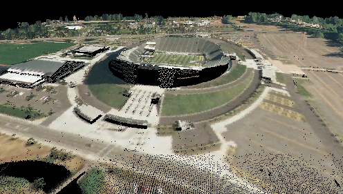
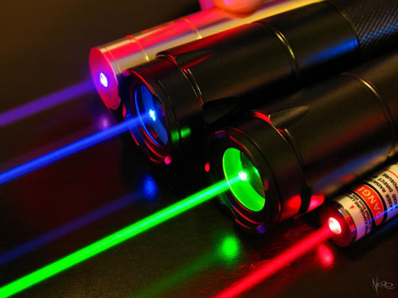
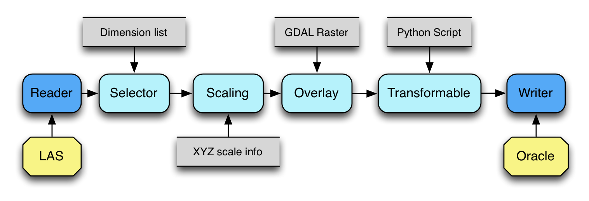

PDAL
Point Data Abstraction Library
What can you do with point clouds
- Visualization
- Exploitation

Pew, pew, pew...
Point cloud data acquisition is typically derived from active sensors like lasers, sonar, and radar.
A new class of data
Point clouds are the precursor to meshes and triangulations, and hey have a number of properties that make them different than a typical WKT POINT you might see in the rest of the GIS industry.
LiDAR point clouds provide surface characterization.
A new class of data
- More than typical XYZ attributes -- XYZRGBIC
- Irregularly spaced - not a grid like a raster
- Extremely dense
- Point representation of a sphere with a specified uncertainty
GDAL PDAL's niche
- On-disk or over-the-wire data format is a function of software requirements
- Immature industry-wide standards (think vector world pre-shapefile)
- Formats are proliferating quickly as the lidar/radar/sonar software industry expands
- Need for basic processing operations
What does PDAL provide?
- Reusable C++ software components
- Liberal licensing (BSD)
- Command-line apps
- Process description XML mini-language
API Components
Three major components
- Reader
- Filter
- Writer
Readers
Writers
Filters
- Byteswap
- Caching
- Tiling
- Color normalization
- Raster overlay
- Box/WKT cropping
- Rank decimation
Filters cont...
- Spatial indexing
- Reprojection
- Mosaic'ing
- Python predicate filtering
- Python programming filter
- Dimension scaling
- Statistics cumulation
- Dimension selection
Basic pipeline

More stages...

Even more stages...
Python Programmable Filter
import numpy as np
def multiply_z(ins,outs):
Z = ins[‘Z']
Z = Z * 10.0
outs[‘Z'] = Z
return True
Python Predicate Filter
import numpy as np
def filter(ins,outs):
cls = ins['Classification']
keep_classes = [1,2]
# Use the first test for our base array.
keep = np.equal(cls, keep_classes[0])
# For 1:n, test each predicate and join back
# to our existing predicate array
for k in range(1,len(keep_classes)):
t = np.equal(cls, keep_classes[k])
keep = keep + t
outs['Mask'] = keep
return True
Credits
- Howard Butler
- Michael Gerlek
- Mateusz Loskot
- Bradley Chambers
- Michael Rosen
- Kirk McKelvey
Sponsors
- Hobu, Inc.
- Flaxen Consulting
- USACE Cold Regions Research and Engineering Laboratory
- NGA InnoVision
- LizardTech
- RadiantBlue